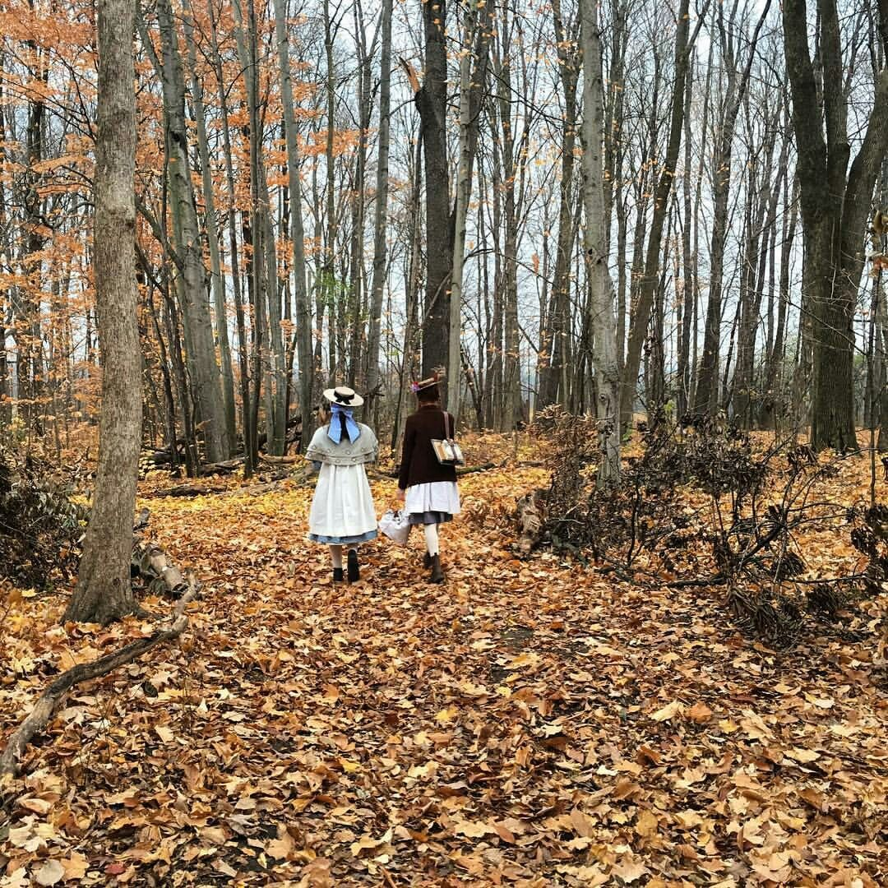
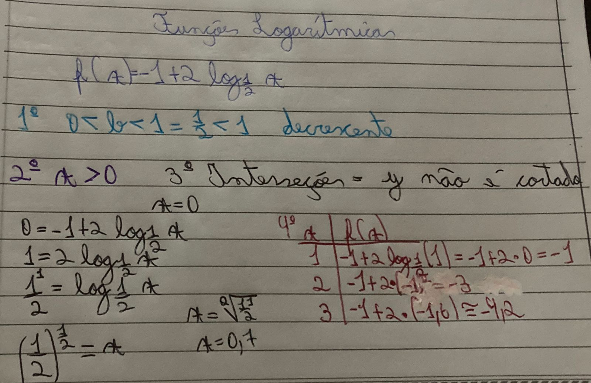
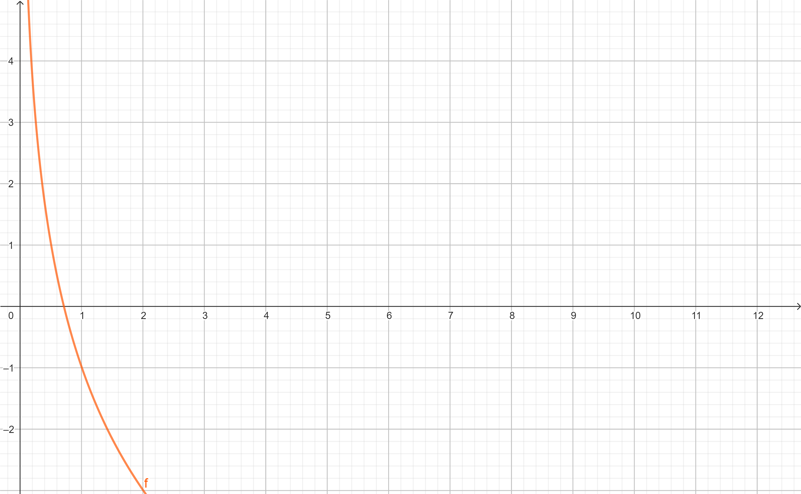

Funções Logarítmicas

Anne e Diana no caminho para a escola.
"Desejar algo diferente não faz com que aconteça." - Anne Shirley Cuthbert
O que são Funções Logarítmicas?
O Logaritmo é a operação contrária ao Expoente, a Função Logarítmica é a contrária
da Função Exponencial.
A+BxlogB(cx+d)
Passos para a construção do gráfico:
- Analisar o crescimento ou decrescimento;
- Determinar o domínio;
- Encontrar as interseções com os eixos;
- Encontrar pontos no gráfico.
1-Crescente: B > 1;
1-Decrescente: 0 < B < 1;
2-Domínio: logba > 0;
3-Interseção x: Realizar o cálculo do logaritmo;
3-Interseção y: Depende se o resultado for negativo;
4-Pontos no Gráfico: Atribuir números à x (não pode ser qualquer número).
Exemplo: f(x)=-1+2.log1/2x


Esta reta é assintota, pois não cruza jamais o eixo y.
O Clube da Leitura fundado pela Anne.
"O luto é o preço que se paga pelo amor." - Anne Shirley Cuthbert
cottage